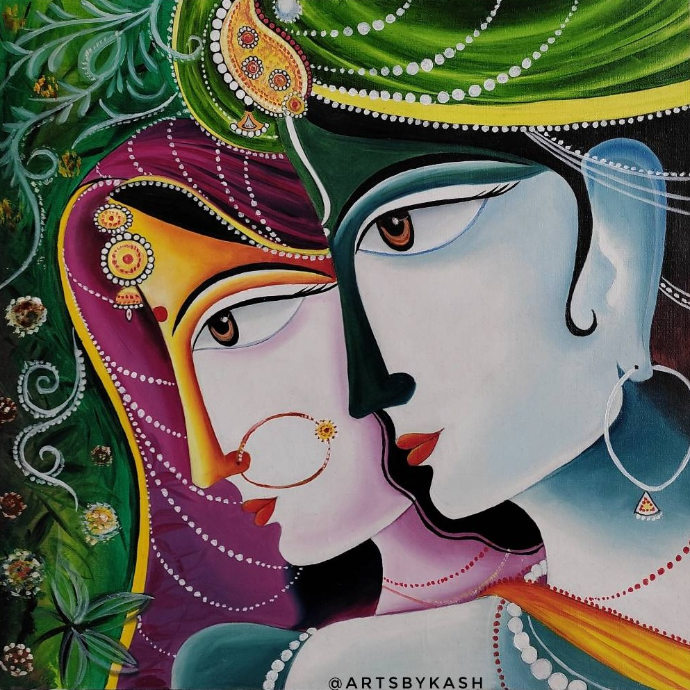
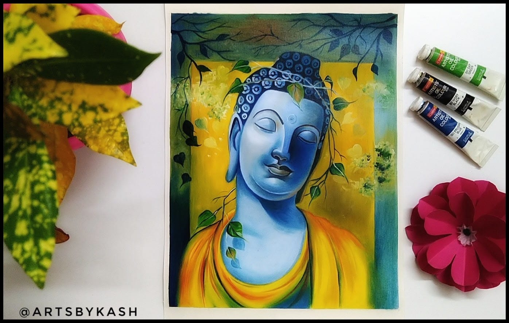

Painting with oilcolours
A painting technique using pigments suspended in drying oils is known as oil painting or painting in oil colours.Artists' oil colours are created by combining dry powder pigments with chosen refined linseed oil to form a stiff paste, which is then ground in steel roller mills using intense friction.It must be used with a liquid painting medium, such as pure gum turpentine, when the artist wants it to have a more fluid or mobile aspect.

Materials used by me for oil paintings
- Camel Artist Oil Color Set of 12
- Wooden Palette
- Brustro Artists' Gold Taklon Brush Set of 10
- Camel Artist Purified Linseed Oil
- Brustro Oil Sheets 400gsm
- Turpentine Oil

artsbykash ©2023